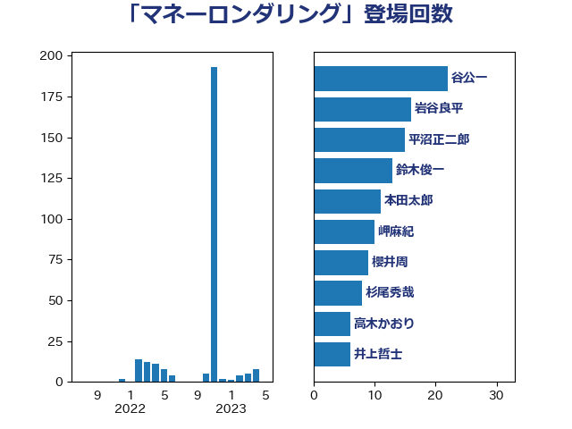

単語「マネーロンダリング」

| 谷公一 | 自由民主党 | 22 回 |
| 岩谷良平 | 日本維新の会 | 16 回 |
| 平沼正二郎 | 自由民主党 | 15 回 |
| 鈴木俊一 | 自由民主党 | 13 回 |
| 本田太郎 | 自由民主党 | 11 回 |
| 岬麻紀 | 日本維新の会 | 10 回 |
| 櫻井周 | 立憲民主党 | 9 回 |
| 杉尾秀哉 | 立憲民主党 | 8 回 |
| 高木かおり | 日本維新の会 | 6 回 |
| 井上哲士 | 日本共産党 | 6 回 |
| 広瀬めぐみ | 自由民主党 | 5 回 |
| 熊谷裕人 | 立憲民主党 | 4 回 |
| 中谷一馬 | 立憲民主党 | 4 回 |
| 櫛渕万里 | れいわ新選組 | 3 回 |
| 階猛 | 立憲民主党 | 2 回 |
| 緒方林太郎 | 無所属 | 2 回 |
| 神谷宗幣 | 参政党 | 2 回 |
| 田村貴昭 | 日本共産党 | 2 回 |
| 田村智子 | 日本共産党 | 2 回 |
| 渡辺創 | 立憲民主党 | 2 回 |
| 木原誠二 | 自由民主党 | 2 回 |
| 堀場幸子 | 日本維新の会 | 2 回 |
| 馬淵澄夫 | 立憲民主党 | 1 回 |
| 鈴木敦 | 国民民主党 | 1 回 |
| 道下大樹 | 立憲民主党 | 1 回 |
| 簗和生 | 自由民主党 | 1 回 |
| 篠原孝 | 立憲民主党 | 1 回 |
| 福重隆浩 | 公明党 | 1 回 |
| 石原宏高 | 自由民主党 | 1 回 |
| 浅田均 | 日本維新の会 | 1 回 |
| 打越さく良 | 立憲民主党 | 1 回 |
| 岡田直樹 | 自由民主党 | 1 回 |
| 岡本三成 | 公明党 | 1 回 |
| 山本博司 | 公明党 | 1 回 |
| 小池晃 | 日本共産党 | 1 回 |
| 宗清皇一 | 自由民主党 | 1 回 |
| 塩川鉄也 | 日本共産党 | 1 回 |
| 城井崇 | 立憲民主党 | 1 回 |
| 北神圭朗 | 無所属 | 1 回 |
| 勝部賢志 | 立憲民主党 | 1 回 |
| 前原誠司 | 国民民主党 | 1 回 |
| 三浦信祐 | 公明党 | 1 回 |